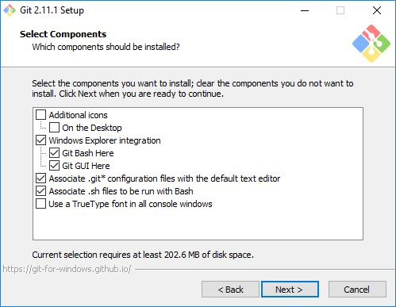
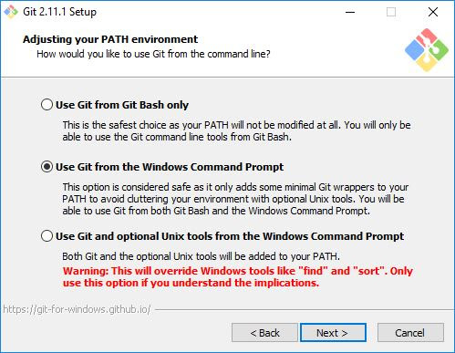
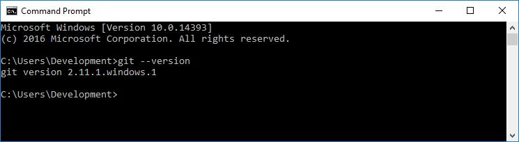
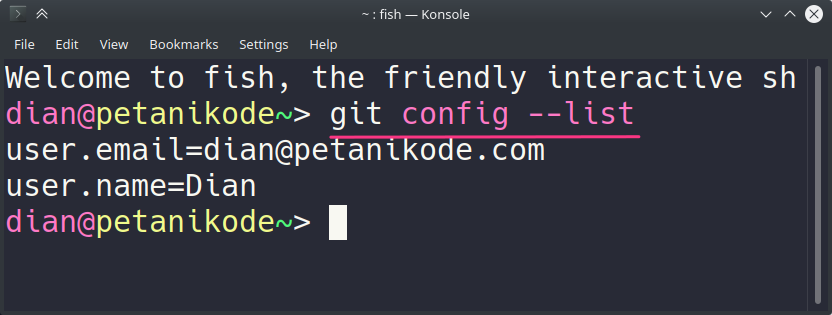

1. GIT(Group include Tour)
GIT ?
Secara sederhana git itu salah satu dari,Vcs (Version control sistem)Version control sistem disebut juga revision control sistem atau source code management adalah sistem yang mengelolah perubahan dari sebuah dokumen,program komputer,website dan kumpulan informasi lain.KENAPA KITA MENGGUNAKAN VERSION CONTROL ?
ISTILAH-ISTILAH DIDALAM GIT
FOLDER PROJETREPOSITORY/REPO
REKAHAMAN ATAU HISTORY/SNAPSHOOT
COMMIT
PENANDA UNIK PADA COMMIT
HASH
BERPINDAH KESEBUAH COMMIT
CHECKOUT
CABANG BEBAS DARI SEBUAH COMMIT
BRANCH
MENGGABUNGKAN CABANG ATAU BRANCH
MERGE
SUMBER MEMILIKI REPO
REMOTE
MENGGAMBIL REPO DARI REMOTE
CLONE
MENGGIRIMKAN COMMIT KE REPO
PUSH
MENGGAMBIL COMMIT DARI REPO
PULL
Cara Install Git di Windows
Silahkan buka website resminya Git ( git-scm.com). Kemudian unduh Git sesuai dengan arsitektur komputer kita. Kalau menggunakan 64bit, unduh yang 64bit. Begitu juga kalau menggunakan 32bit.
Langkah-langkah Install Git di Windows
Baiklah, mari kita mulai ritual instalnya. Silahkan klik 2x file instaler Git yang sudah diunduh. 
Maka akan muncul infomasi lisensi Git, klik Next untuk melanjutkan.

Selanjutnya menentukan lokasi instalasi. Biarkan saja apa adanya, kemudian klik Next.

Selanjutnya pemilihan komoponen, biarkan saja seperti ini kemudian klik Next .

Selanjutnya pemlilihan direktori start menu, klik Next.

Selanjutnya pengaturan PATH Environment. Pilih yang tengah agar perintah git dapat di kenali di Command Prompt (CMD). Setelah itu klik Next.

Selanjutnya konversi line ending. Biarkan saja seperti ini, kemudian klik Next

Selanjutnya pemilihan emulator terminal. Pilih saja yang bawah, kemudian klik Next

Selanjutnya pemilihan opsi ekspreimental, langsung saja klik Install untuk memaulai instalasi.

Tunggu beberapa saat, instalasi sedang dilakukan.

Setelah selesai, kita bisa langsung klik Finish.
Selamat, Git sudah terinstal di Windows. Untuk mencobanya, silahkan buka CMD atau PowerShell, kemudian ketik perintah git --version.

Konfigurasi Awal yang Harus Dilakukan
Ada beberapa konfigurasi yang harus dupersiapakan sebelum mulai menggunakan Git, seperti name dan email.Silahkan lakukan konfigurasi dengan perintah berikut ini.
git config --global user.name "Petani Kode"
git config --global user.email contoh@petanikode.com
Kemudian periksa konfigurasinya dengan perintah:
git config --list
Apabila berhasil tampil seperti gambar berikut ini, berarti konfigurasi berhasil.


2. GITHUB
sebuah website yang bisa kalian kunjungi kalian registrasi,https://github.com/ ,dengan pembuatan akun,yaitu kalian bisa upload file atau bikin file didalamnya nanti filenya bisa dikelola menggunakan VCS(version control sistem),ini kebalikannya kalian bisa bekerja di GITHUB tanpa nginstal git, yang git itu salah satu dari,Vcs (Version control sistem)Version control sistem disebut juga revision control sistem atau source code management adalah sistem yang mengelolah perubahan dari sebuah dokumen,program komputer,website dan kumpulan informasi lain.
-

Subversion, atau dikenal juga dengan nama svn atau SVN, adalah suatu perangkat lunak sumber terbuka pengendali versi yang dapat mengatur proses pengembangan perangkat lunak yang dilakukan oleh suatu kelompok pemrogram yang terpisah menjadi runut dan teratur.
-
mercurial svg,Scalable Vector Graphics atau SVG adalah format gambar vektor berbasis teks XML. Biasanya, gambar-gambar yang kita lihat di internet hadir dalam format, seperti JPG dan PNG. Kedua format ini dibuat dari sejumlah ‘kotak’ berukuran sangat kecil yang disebut piksel. Sedangkan format SVG bergantung pada XML markup untuk menggambarkan garis, bentuk, dan atribut gambar lainnya.
-

PENGERTIAN CVS Concurrent Versioning System (CVS) adalah client-server perangkat lunak bebas revisi kontrol sistem di bidangpengembangan perangkat lunak . CVS adalah suatu sistem yang memungkinkan kita untuk selalu mengtrack file-file yang kita kerjakan saat kita sedang mengerjakan suatu proyek bersama-sama.
-

Bitbucket adalah sebuah layanan hosting yang berbasis web untuk kode sumber dan pembangunan proyek yang menggunakan Mercurial (sejak peluncuran) ataupun sistem kendali versi Git (sejak Oktober 2011 ) yang dimiliki oleh Atlassian. Bitbucket menawarkan paket akun komersial dan gratis.

GitLab adalah sebuah manajer repositori Git berbasis web dengan fitur wiki dan pelacakan masalah, menggunakan lisensi sumber terbuka, dikembangkan oleh GitLab Inc. Perangkat lunak ini ditulis oleh Dmitriy Zaporozhets dan Valery Sizov dari Ukraina. Kode yang ditulis adalah Ruby. Kemudian, beberapa bagian telah ditulis ulang di Go.